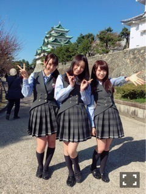
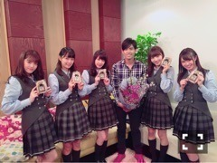

| 2016/03 31 Thu | ひめたん-0o0-その622 |
最近タイトルのナンバリングが
ぐしゃぐしゃですね( >_< )
また間違ってましたね
ご指摘くださった皆さんありがとう
毎度ごめんね～

チーム名古屋！
土曜日は色んな媒体さんに
お世話になりました( ˇωˇ )
◯東海テレビ スタイルプラス(放送済)
◯め～テレ デルサタ！
◯め～テレ BOMBER-E 4/5,4/12
◯中日スポーツ
放送される地域にお住まいの皆さん
是非チェックしてみて下さい！
日曜日は乃木坂3期生募集セミナーに
参加してきました( ˇωˇ )
今までこんなのなかったから
いいな～って思っちゃった。
学校説明会みたいな気分だったよ！
乃木坂ちゃんに興味を持って
参加してくれたのかな～嬉しい～
貴重な時間を過ごせたと思います
参加して下さった皆さん
ありがとうございました！

日曜の夜はらじらー！サンデー
ゲストは声優アーツに豊崎愛生さん
乃木坂から橋本奈々未ちゃんでした～！
久々のななみん登場だね！
らじらーまた来たいって言ってくれてたので
こちらもとっても嬉しかったo(^o^)o
対決企画ではまたも負けてしまったけれど
楽しかったからいいんだ～♪
今度は勝てるよう頑張ります～
次回、番組編成が少し変わります。
20:05～番組スタート
20:10～声優アーツ
21:05～日芽香ちゃん登場
です！出番ちょっと早くなったよ(^o^)
お聞き逃しのないように！
ゲストは声優アーツに茅原実里さん、
乃木坂から堀未央奈ちゃんの登場です。
私、連続になるけれど、
一週目なので乃木坂週だよ～！
今週のメールテーマはこちら。
◯ラブ♡ゾンビ対決
◯乃木坂46 どんな3期生？
◯究極の＞＜不等号
◯未央ちゃんへの応援メッセージ
レギュラーコーナーや
リクエストソング、ふつおたなどなど
メールお待ちしてます＼(^o^)／
おたよりの宛先はこちら。
そうだ、新年度になるし、改めて。
らじらー！サンデーは
NHKラジオ第一で
毎週日曜日20:05～
生放送でお送りしてます。
スマホの方はアプリ
「らじる☆らじる」をダウンロードすると
簡単に聞けますよ～♪
奇数週は乃木坂46、
偶数週はSKE48さんの担当。
稀に変わることもありますので
詳しくは公式サイトをチェックして下さい。
もしくは私が
公式サイトばりにお知らせするので
ここ見てると間違いないかな。笑
らじらー！サタデーは毎週土曜日
同じ時間にやってます
そちらも是非聞いて下さい。
乃木中では「不等号」
スタジオライブが流れました！
先週オンエアって知らなかったから
びっくりしたよ(・∀・)
それぞれの歌パートがわかるように
撮って下さってましたね。
個人的には間奏～ラストサビも
観て欲しかったなあ
28日は生ドルに
まいまいとゲスト出演しました！
まっちゅん、かなりん、ありがとう～♪
あの現場はいつも
アットホームな雰囲気だなーと思います
まっちゅんとかなりんの人柄故なのかな。
「ハルジオンが咲く頃」発売記念てことで
新曲のタイトルとかけた
いろんな企画を用意してくださいました～
楽しかった！
まいまいお誕生日おめでとう♡

さらに昨日はソニレコ生放送でした！
Kちゃん卒業SPということで
番組が始まってから2年半
MCとして盛り上げて下さったKちゃんを
みんなで送り出す会でしたね。
思い返せば
ソニレコの収録ではいつも
リラックスしていたな～
3人でほのぼのトークしたり、
皆さんからのメール紹介したり、
アーティストさんから色んな刺激を受けたり
私にとっては学びの場であり、
憩いの場であり、
半年間この番組に携われて
本当に幸せだったなあと(´｡•ω•｡`)
ゆるゆるな空気感って
狙ってできるものではないと思っていて。
そこはスタッフさんやKちゃんの
懐の大きさ深さなんだなって
フォローはこちら側がするから
君たちは何やってもいいんだよっていう。
なんと素敵な番組なんでしょう！
私、皆さんも番組観てて
お気づきかもしれないけれど
仲良くなるまで被ってる仮面が
結構分厚いから(笑)
やっと最近
馴染めてきたような気がしてて
収録がいつも楽しみで楽しみで
だから凄く寂しいし、
改めてソニレコは私にとって
大切な存在だったんだなと
感じました( ˇωˇ )
番組はこの春から
しばらくお休みになってしまいます。
春ってそういう季節だよね
聞いた時は寂しい気持ちになりましたが、
でもスタッフの皆さんは私と愛未に
「絶対またやろう！
これは終わりじゃないんだ！」
って言って下さいました( ˇωˇ )
だからあれは最終回じゃなかった。
また戻ってくるその日まで
皆さん、待っててください！

～お知らせ～
4/2 グラビアザテレビジョン
4/6 トップエール
4/10 マーキー
4/15 EX大衆
4/22 BRODY
4/23 UTB
4月なんてことだ！
もうちょっと実はあるのですが
そのうちお知らせできると思いますo(^o^)o
新曲のこと、名古屋ライブのこと、
これから始まる東北ツアーのこと、
ハタチになりますね～みたいなこと
いろんなお話させていただいてます
是非チェックしてみて下さい～
4月からNOGIBINGO!6始まるんだもんね
乃木ののは時間が変わるんだよね
乃木恋も事前登録始まってるらしい
たくさんあって大変かもだけど
全部観てね！！！
あ、SUUMOムービー
メイキングも公開されたのでよかったら
公式チャンネルへ遊びに行ってみて下さい～
(＊´・ω・＊)
コメント(661)
2016/03/31 23:36